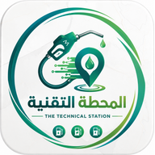

خدمةٌ جديدة تقدّمها
المحطةُ التقنية
مساعدُ الطريق
المحطةُ التقنية تُجيبُ سؤالاً واحداً
أين الوقودُ في مدينتي الآن؟
لكنّ أغلبَ الطرقِ الرئيسية تمرّ بمناطقَ صحراوية
وخارجَ المدينةِ يتبدّلُ السؤال
ماذا على طريقي؟
وأينَ لا شيء؟
شبكةُ الأنبار كاملةً
من بغداد شرقاً إلى طريبيل على حدود الأردن،
ومن القائم والوليد على حدود سوريا
إلى عرعر على حدود السعودية.
0 مدينةً ومنفذاً ·
0 رحلةً بين نقطتين
وكلُّ وصلةٍ منها طريقُ قيادةٍ حقيقيّ، لا خطٌّ على ورق.
تختارُ من أين، وإلى أين
الرمادي
←
منفذ عرعر
0 كم
5 ساعات و30 دقيقة إلى الحدود السعودية — من محرّكِ توجيهٍ حقيقيّ، لا من سرعةٍ مفترضة
محطاتُ هذا الطريق — بالترتيبِ الذي تمرُّ به
ثمانٍ منها في أوّلِ 77 كم
ثمّ يبدأُ أطولُ امتدادٍ في الرحلة
0 كم بين محطتين
من المحمديات عند الكيلومتر 77
إلى محطة النخيب الحكومية عند الكيلومتر 305.
وبعدها 115 كم إلى محطة وقود عرعر الجديدة.
وثلاثةُ منافذَ تبدأُ من هنا
الأردن
بغداد ← طريبيل
544 كم · 6 ساعات و20 دقيقة · 20 محطة
أطولُ امتداد 131 كم
سوريا
بغداد ← القائم
406 كم · 4 ساعات و50 دقيقة · 19 محطة
أطولُ امتداد 187 كم
السعودية
بغداد ← عرعر
411 كم · 5 ساعات و10 دقائق · 36 محطة
أطولُ امتداد 137 كم
ثلاثةُ طرقٍ دولية — تعرفُ محطاتِ كلٍّ منها، وأينَ يطولُ ما بينها.
ولكلِّ طريقٍ امتدادُه الأطول
بغداد ← طريبيل · الأردن · 544 كم
أطولُ امتدادٍ بين محطتين: 131 كم
بغداد ← عرعر · السعودية · 411 كم
أطولُ امتدادٍ بين محطتين: 137 كم
بغداد ← القائم · سوريا · 406 كم
أطولُ امتدادٍ بين محطتين: 187 كم
الفلوجة ← القائم · 347 كم
أطولُ امتدادٍ بين محطتين: 187 كم
الرمادي ← عرعر · 426 كم
أطولُ امتدادٍ بين محطتين: 228 كم
والعودةُ ليست الذهابَ معكوساً
اثنتا عشرةَ محطةً بدل إحدى عشرة — والامتدادُ الطويل يقع في أوّلِ الطريق لا في آخره
المعروضُ تغطيةٌ فقط: أين تقفُ المحطاتُ على طريقك.
لا ما تبيعه، ولا متى تفتح.
وقد توجدُ محطاتٌ لا نعرفها — لكنّا لا نَعِدُك بها.
0 رحلةً بين نقطتين ·
0 محطةَ طريق
حُسبت مرّةً وخُزّنت — تعملُ والشبكةُ بعيدة
مساعدُ الطريق
داخلَ المحطةِ التقنية · مجّاناً
muhta.online
وقريباً تُضافُ المحطاتُ كاملةً إلى النظامِ بإذنِ الله
فكرةً وتنفيذاً وبرمجةً: أحمد الرفاعي

كيف تصل إليها؟
1
افتح المحطة التقنية
ثمّ القائمة الجانبية ← مساعد الطريق
2
اختر من أين تنطلق، وإلى أين وجهتك
ثمّ اضغط ابحث عن الطريق — وإن كان بين المدينتين طريقان، اختر ما تسلك
3
تظهر خريطةُ طريقك
واضغط أظهر المحطات على الطريق لترى بطاقاتها بالترتيب
وزرُّ اعكس الرحلة يريك طريقَ العودة — فهي ليست الذهابَ معكوساً.
المحطةُ التقنية
ومعها مساعدُ الطريق · مجّاناً وبلا حساب
App Storeلآيفون وآيباد
Google Playلأندرويد
كُن مع آلافٍ يعرفون أين الوقودُ قبل أن يتحرّكوا
muhta.online